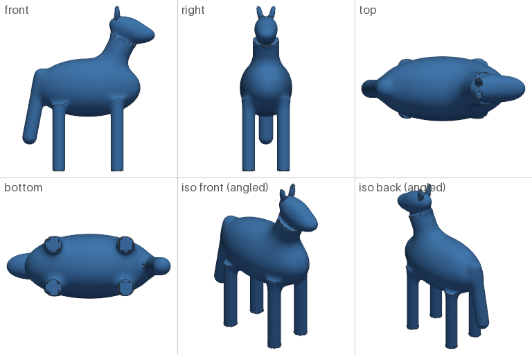
#1
A standing horse figurine, 60 mm tall, four legs, long neck and head raised, a tail hanging down.
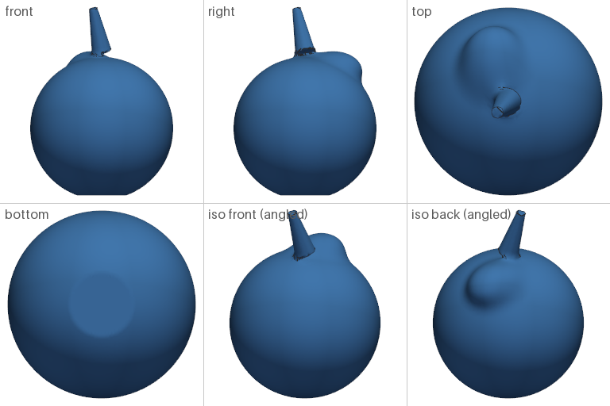
#2
An apple 50 mm wide with a short stem and one leaf.
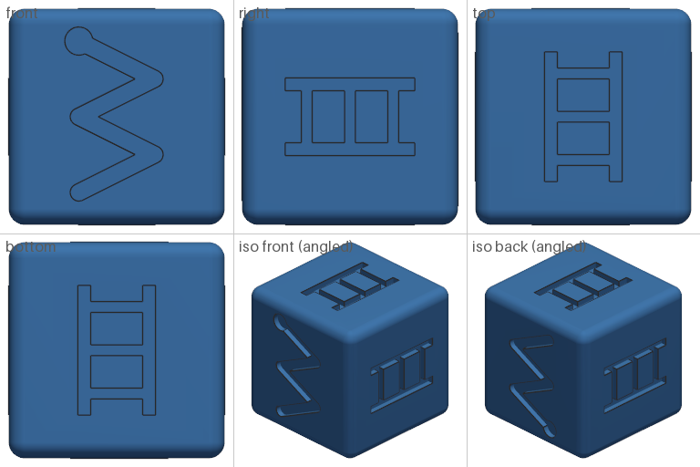
#3
Make a die that has 2 snakes and 4 ladders instead of numbers.
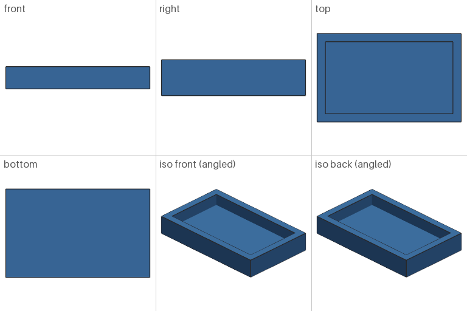
#4
I need a little open tray to keep SD cards in. It has to fit a 50 x 30 x 20mm spot on my shelf, thin walls are fine.
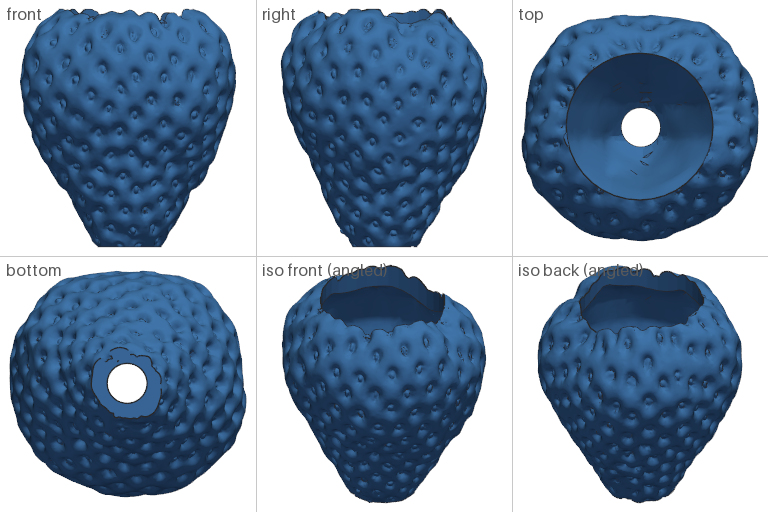
#5
A strawberry 40 mm tall, heart-shaped, with small seed dimples over its surface and a crown of leaves on top.
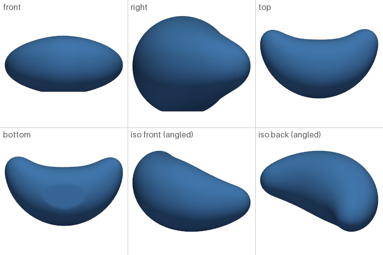
#6
A croissant 80 mm long, crescent-shaped, with rolled layers that swell in the middle and taper to the two curved ends.

#7
A 25mm cube with a 10mm diameter hole drilled through the centre from top to bottom.
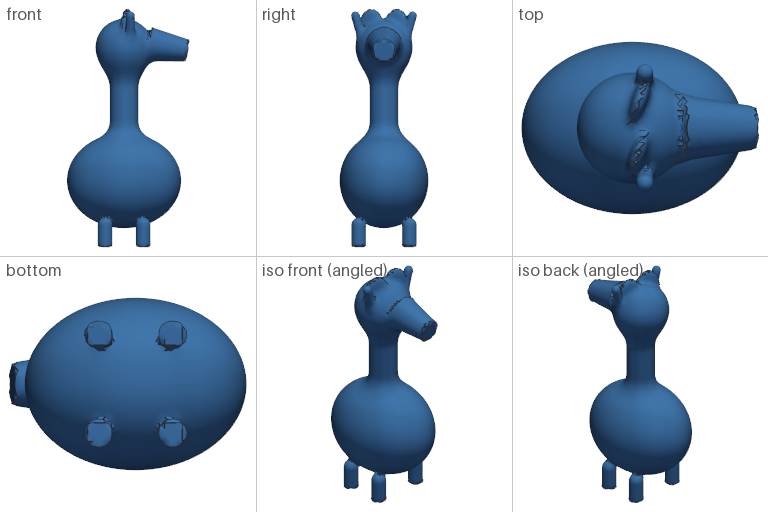
#8
A standing llama 75 mm tall: four thin legs, a long upright neck, a small head with tall pointed ears and a fluffy body.
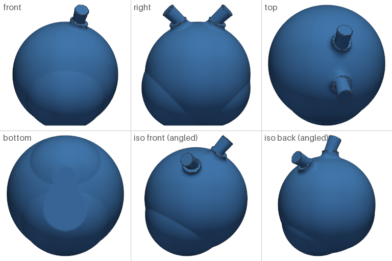
#9
A strawberry 40 mm tall, heart-shaped, with small seed dimples over its surface and a crown of leaves on top.

#10
A stepped shaft on one axis: 10mm diameter for the first 20mm, then 16mm diameter for 15mm, then 8mm diameter for the last 25mm.
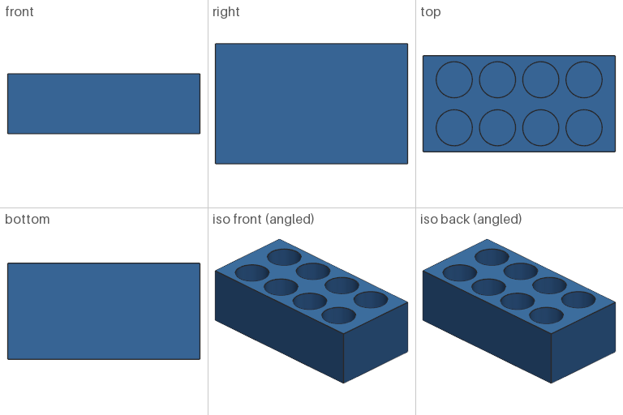
#11
Can you make me something to stand my AA batteries up in? 8 of them in two rows of four, holes 15mm wide and 20mm deep, in an 80 x 40 x 25 block.
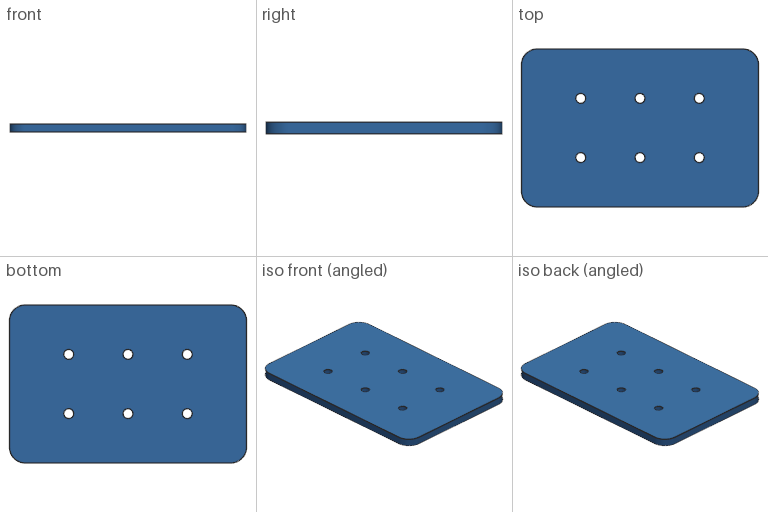
#12
A 120mm x 80mm x 4mm mounting plate with a 3 by 2 grid of 5mm holes spaced 30mm apart, centred on the plate, and all four corners rounded with an 8mm radius.
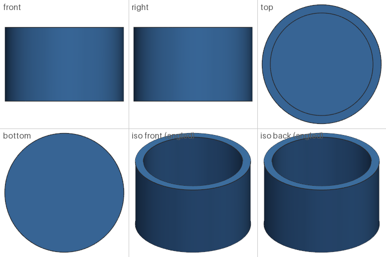
#13
My table leg is a 25mm round tube and it scratches the floor. Make a cap that slides 15mm onto the end, with a 3mm thick bottom.
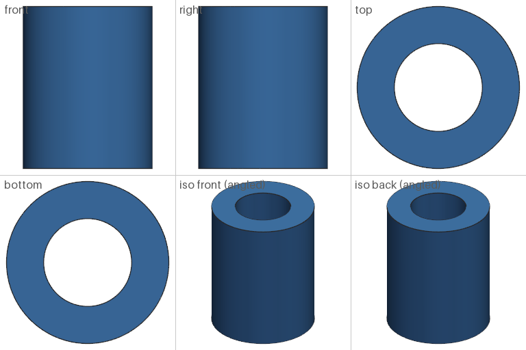
#14
A cylindrical spacer with 12mm outer diameter, 6.5mm inner diameter, 15mm long.
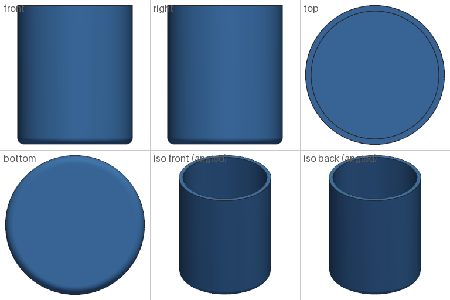
#15
A cylindrical cup 50mm outer diameter and 60mm tall with 2mm walls and a 2mm base, open at the top, with the outer bottom edge filleted with a 3mm radius.

#16
A stepped shaft on one axis: 10mm diameter for the first 20mm, then 16mm diameter for 15mm, then 8mm diameter for the last 25mm.
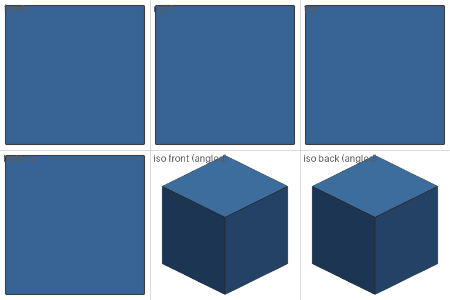
#17
A 25mm cube with a 10mm diameter hole drilled through the centre from top to bottom.
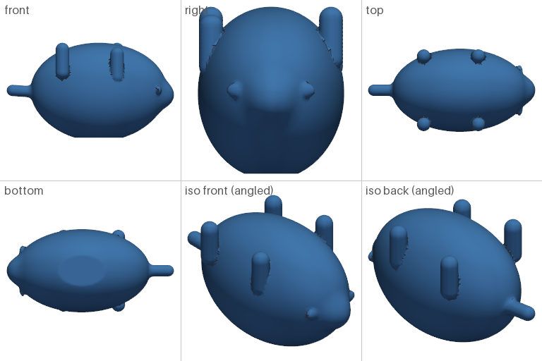
#18
A turtle 60 mm long: a domed shell, four stubby legs, a head poking out the front and a short tail.
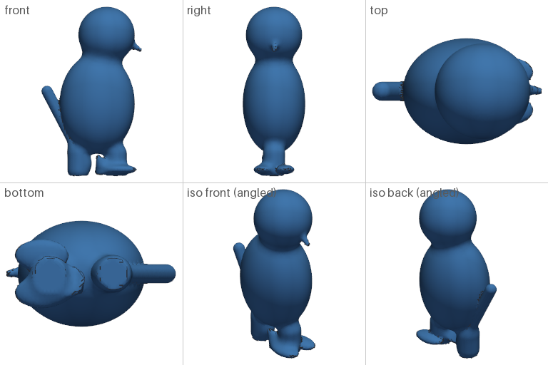
#19
A chicken 50 mm tall standing on two legs, a round body, a comb on top of its head, a small beak and tail feathers raised at the back.
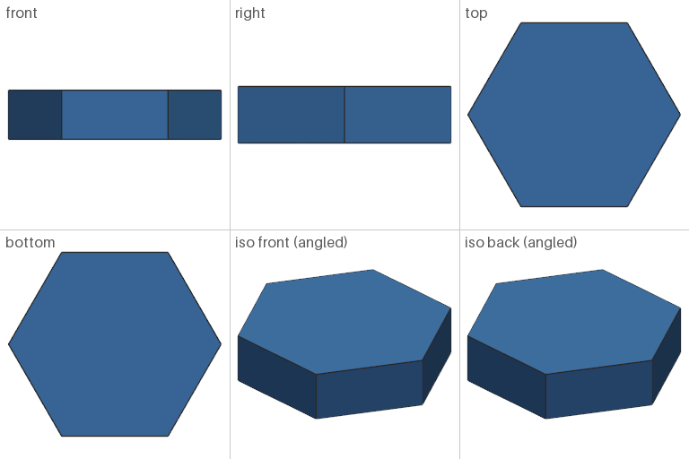
#20
A hexagonal prism 30mm across the flats and 8mm tall.
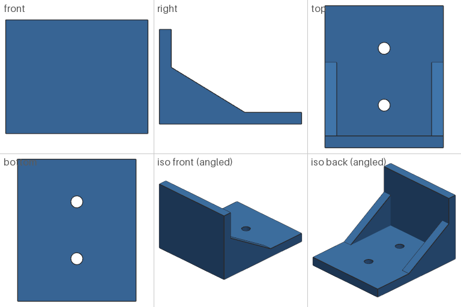
#21
An L-bracket 50mm wide with a 60mm long horizontal leg and a 40mm tall vertical leg, both 5mm thick, braced by two 5mm thick triangular gussets flush with the side edges, with two 5mm holes in each leg.

#22
A 70mm x 20mm x 4mm bar with a 40mm long, 6mm wide slot through it, centred along its length.
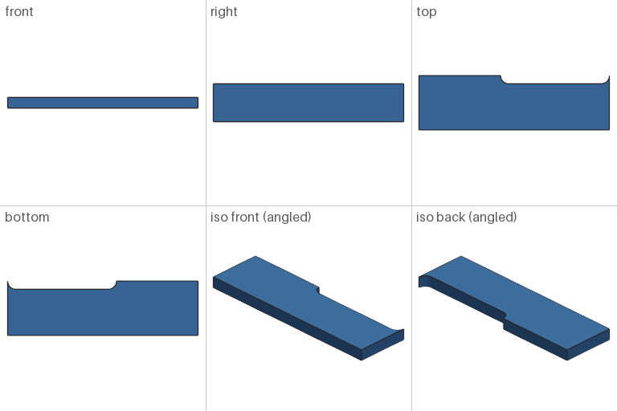
#23
A 70mm x 20mm x 4mm bar with a 40mm long, 6mm wide slot through it, centred along its length.
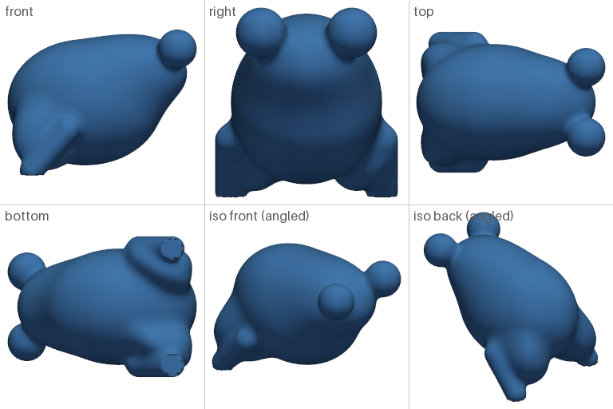
#24
A frog sitting on its folded back legs, about 40 mm long, with big bulging eyes on top of its head.
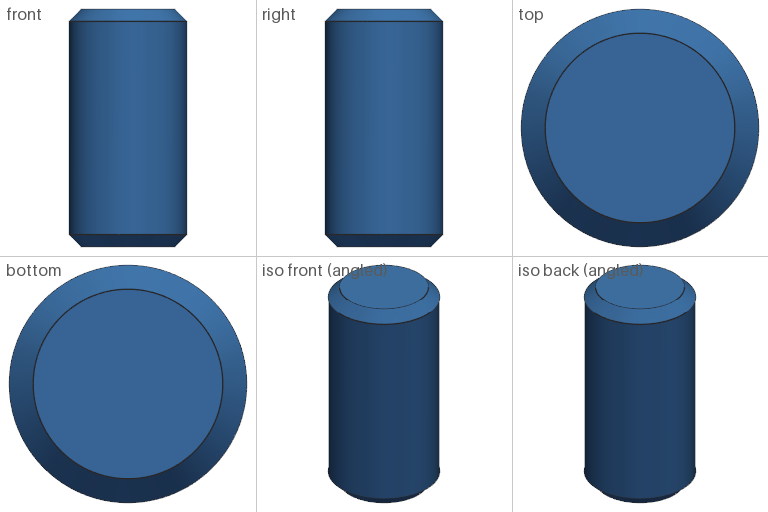
#25
A 20mm diameter pin 40mm long with a 2mm chamfer on both end edges and a 3mm wide, 1.5mm deep groove around it halfway along its length.
#26
A 90 degree pipe elbow: a tube with 20mm outer and 16mm inner diameter, bent through 90 degrees around a 30mm centreline radius, with no straight ends.
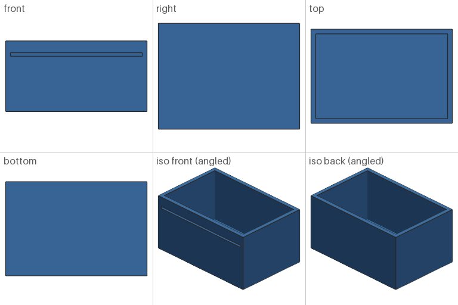
#27
An open-top box 60mm x 40mm x 30mm with 2mm walls and floor, with a 1.5mm tall, 1mm deep groove cut into the inside of both long walls, 3mm below the top edge, for a sliding lid.
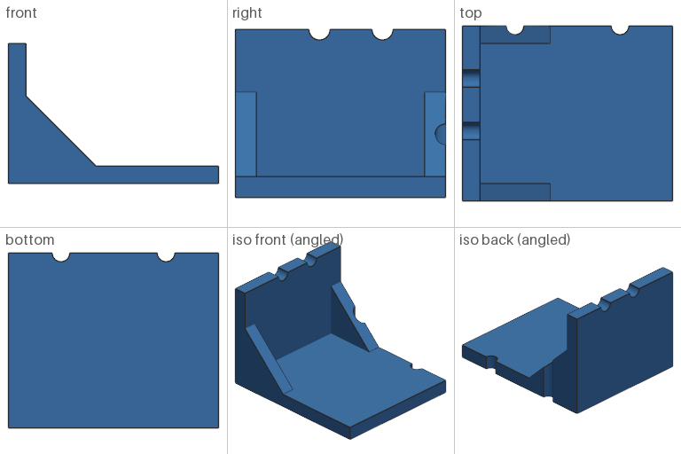
#28
An L-bracket 50mm wide with a 60mm long horizontal leg and a 40mm tall vertical leg, both 5mm thick, braced by two 5mm thick triangular gussets flush with the side edges, with two 5mm holes in each leg.
#29
A 120mm x 80mm x 4mm mounting plate with a 3 by 2 grid of 5mm holes spaced 30mm apart, centred on the plate, and all four corners rounded with an 8mm radius.
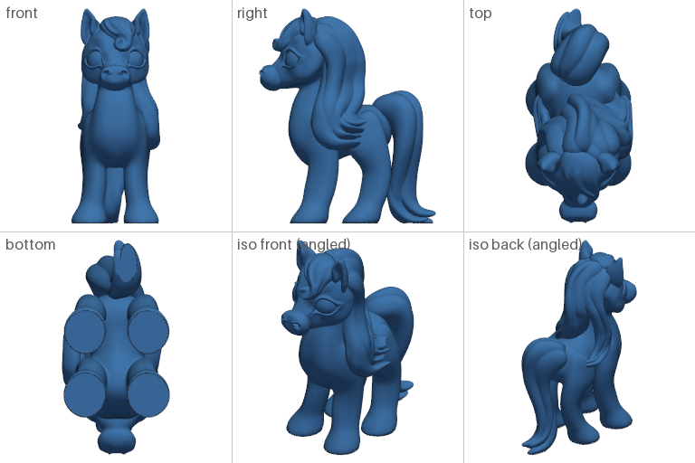
#30
A standing horse figurine, 60 mm tall, four legs, long neck and head raised, a tail hanging down.
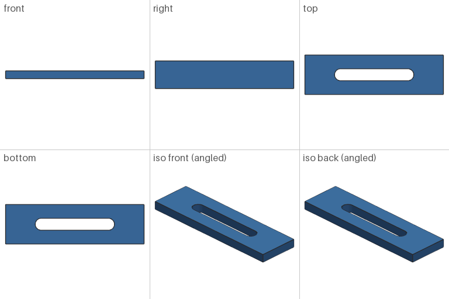
#31
A 70mm x 20mm x 4mm bar with a 40mm long, 6mm wide slot through it, centred along its length.
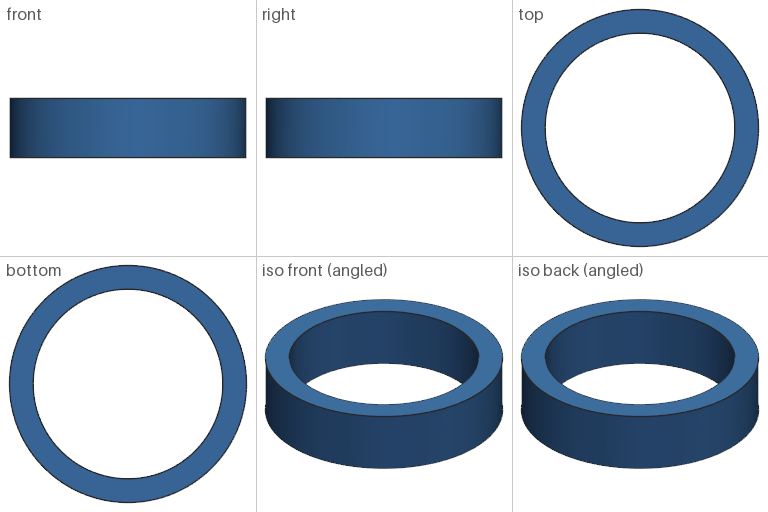
#32
A pipe clamp ring: 10mm tall, 32mm inner diameter, 4mm wall, with a 2mm wide gap cut through one side of the ring.
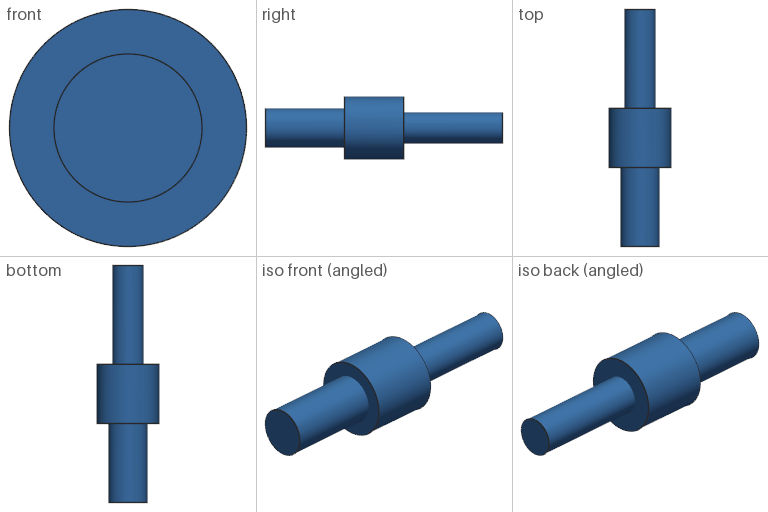
#33
A stepped shaft on one axis: 10mm diameter for the first 20mm, then 16mm diameter for 15mm, then 8mm diameter for the last 25mm.
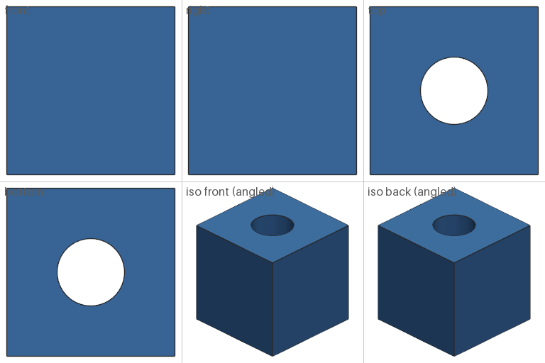
#34
A 25mm cube with a 10mm diameter hole drilled through the centre from top to bottom.
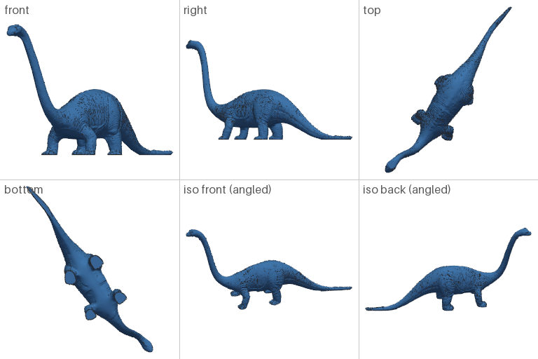
#35
A long-necked dinosaur (brontosaurus) 80 mm long: a heavy body on four pillar legs, a long neck with a small head, and a long tail.
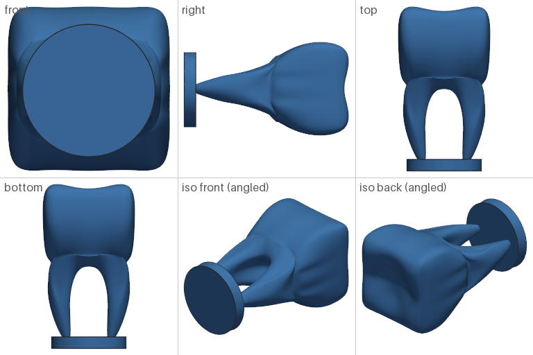
#36
A molar tooth 40 mm tall, standing on its two roots, with a wide crown and a bumpy top.
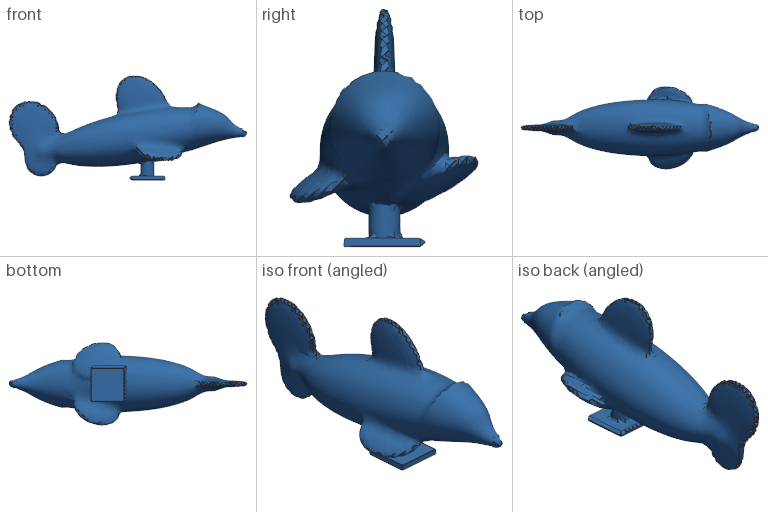
#37
A shark 80 mm long, swimming, on a small stand: a pointed snout, a tall dorsal fin, two side fins and a forked tail.
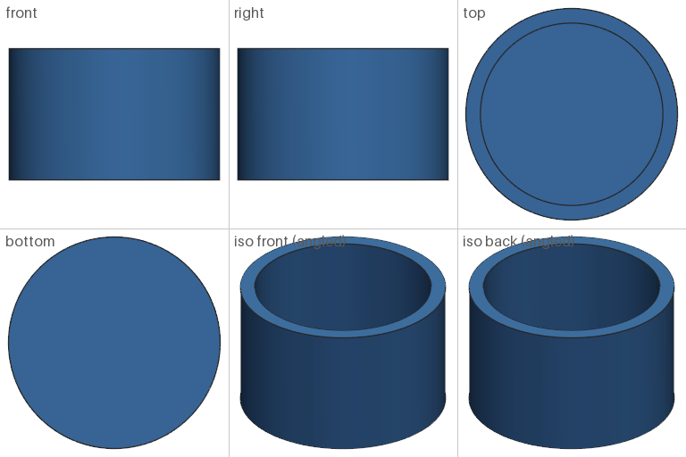
#38
My table leg is a 25mm round tube and it scratches the floor. Make a cap that slides 15mm onto the end, with a 3mm thick bottom.

#39
An open-top rectangular tray 100mm x 60mm x 15mm with 2mm walls and a 2mm floor, with one 2mm divider wall splitting it into two equal compartments along its length.
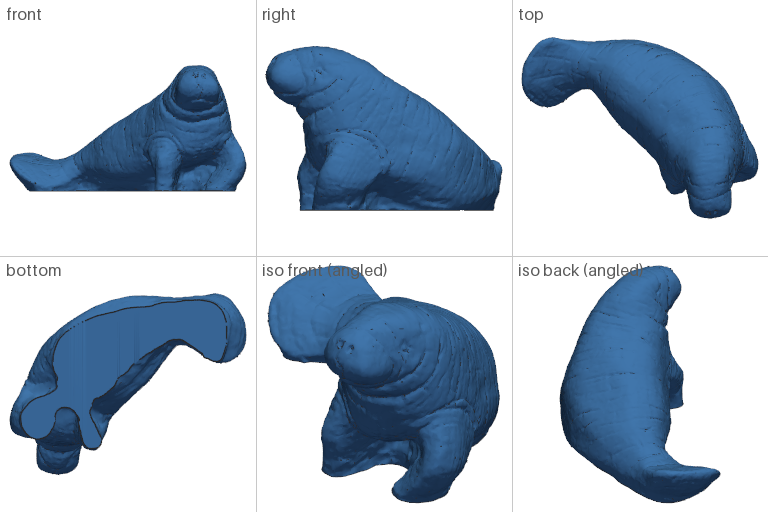
#40
A walrus 55 mm tall, resting on its belly with its front flippers on the ground, a round head, whiskered snout and two long tusks pointing down.
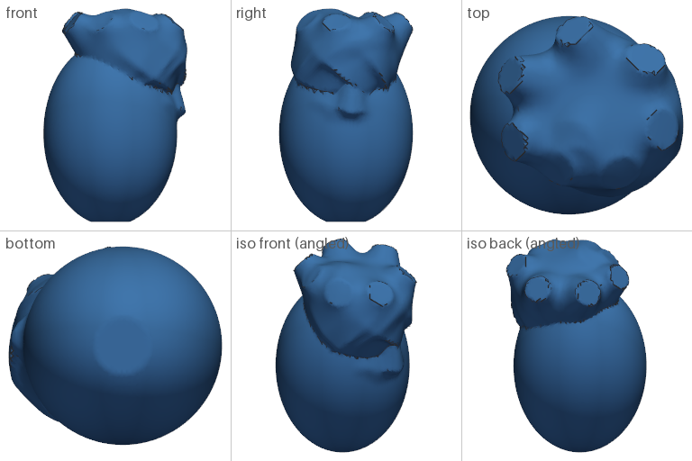
#41
A pineapple 80 mm tall: an oval fruit with a criss-cross scaled surface and a crown of spiky leaves on top.
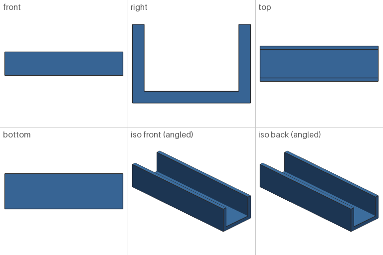
#42
A U-channel 100mm long, 30mm wide and 20mm tall, with 3mm thick walls and base, open at the top and both ends.
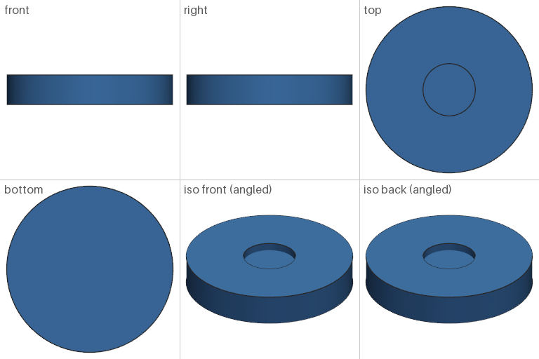
#43
My table leg is a 25mm round tube and it scratches the floor. Make a cap that slides 15mm onto the end, with a 3mm thick bottom.
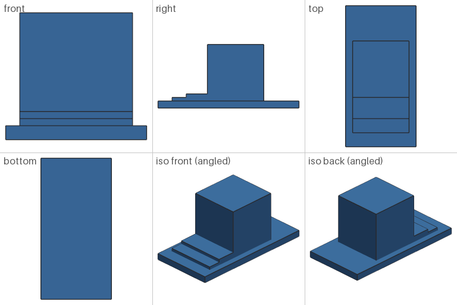
#44
something to prop my 70mm wide phone up at an angle on my desk
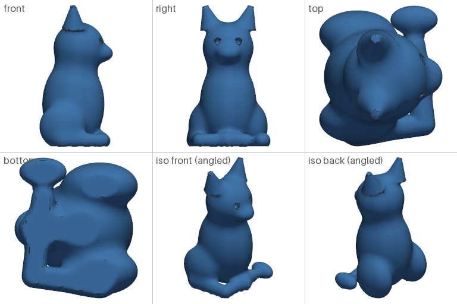
#45
A sitting cat about 50 mm tall, tail curled around its front paws, ears pointing up.
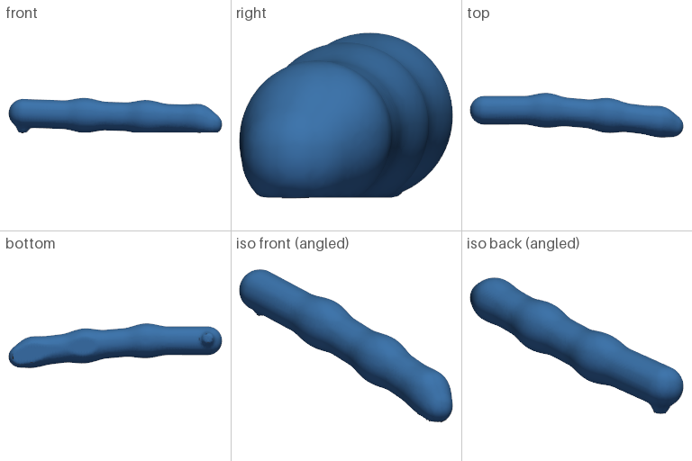
#46
A single banana 90 mm long, curved, with a short stem at one end, lying on its side.
#47
A cylindrical spacer with 12mm outer diameter, 6.5mm inner diameter, 15mm long.

#48
A 100mm long, 20mm deep, 40mm tall block with a 60mm diameter semicircular arch cut through it from front to back, centred on the bottom edge.
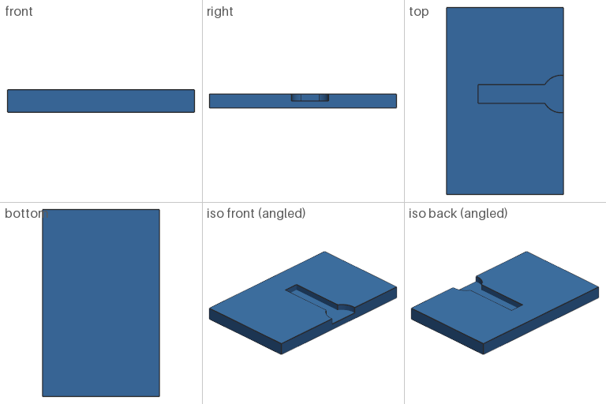
#49
A 25mm wide, 40mm tall, 3mm thick hanging plate with a keyhole cut through it: an 8mm diameter hole centred 12mm above the bottom edge, with a 4mm wide slot running 10mm straight up from the hole's centre.
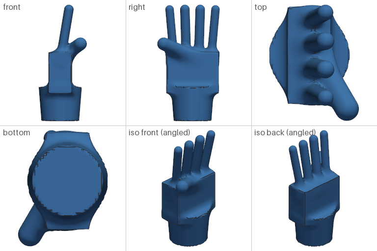
#50
A human hand, palm open with fingers spread, standing upright on its wrist, 90 mm tall.
#51
An open-top rectangular tray 100mm x 60mm x 15mm with 2mm walls and a 2mm floor, with one 2mm divider wall splitting it into two equal compartments along its length.

#52
A cylindrical cup 50mm outer diameter and 60mm tall with 2mm walls and a 2mm base, open at the top, with the outer bottom edge filleted with a 3mm radius.
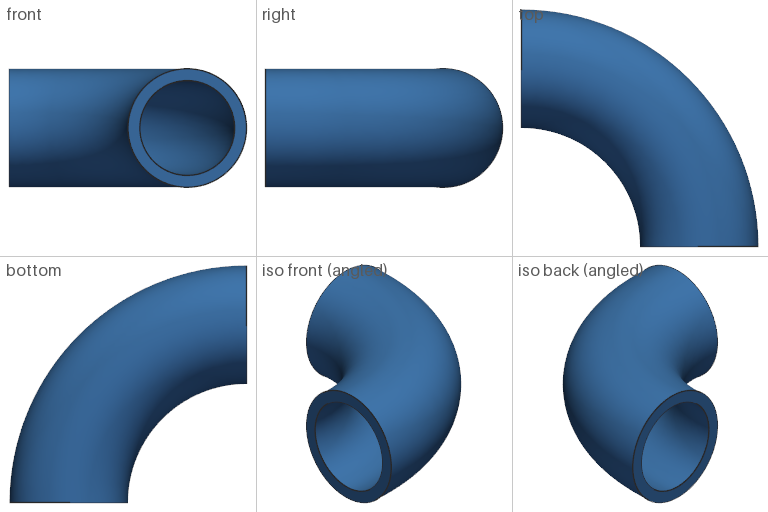
#53
A 90 degree pipe elbow: a tube with 20mm outer and 16mm inner diameter, bent through 90 degrees around a 30mm centreline radius, with no straight ends.

#54
A stepped shaft on one axis: 10mm diameter for the first 20mm, then 16mm diameter for 15mm, then 8mm diameter for the last 25mm.

#55
A stepped shaft on one axis: 10mm diameter for the first 20mm, then 16mm diameter for 15mm, then 8mm diameter for the last 25mm.
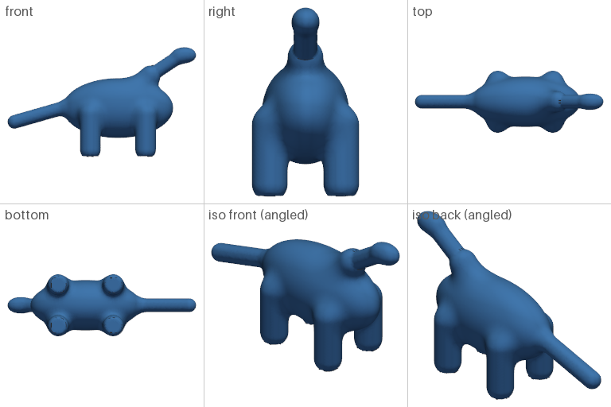
#56
A long-necked dinosaur (brontosaurus) 80 mm long: a heavy body on four pillar legs, a long neck with a small head, and a long tail.
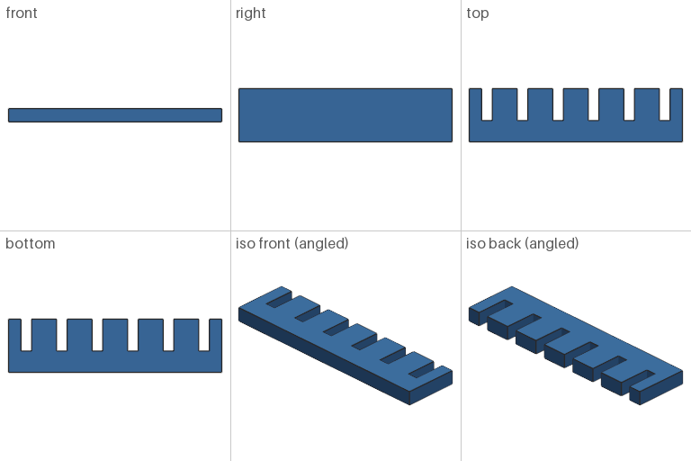
#57
A cable comb: an 80mm x 20mm x 5mm bar with six 4mm wide, 12mm deep slots cut into one long edge, evenly spaced along it.
#58
A desk cable grommet: a 60mm diameter, 3mm thick round flange on top of a 50mm outer diameter, 20mm long tube with 2mm walls, open through the middle, with a 15mm wide slot cut through the flange and tube from one side to the centre so a cable can be slipped in.
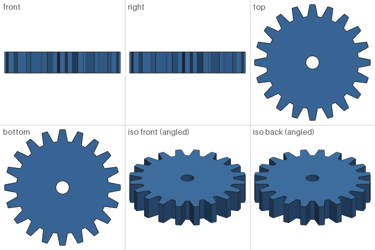
#59
A spur gear with 20 teeth, module 2, 8mm thick, with a 5mm centre bore.
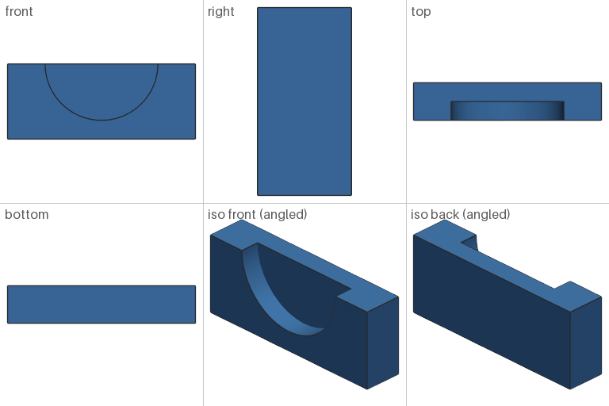
#60
A 100mm long, 20mm deep, 40mm tall block with a 60mm diameter semicircular arch cut through it from front to back, centred on the bottom edge.
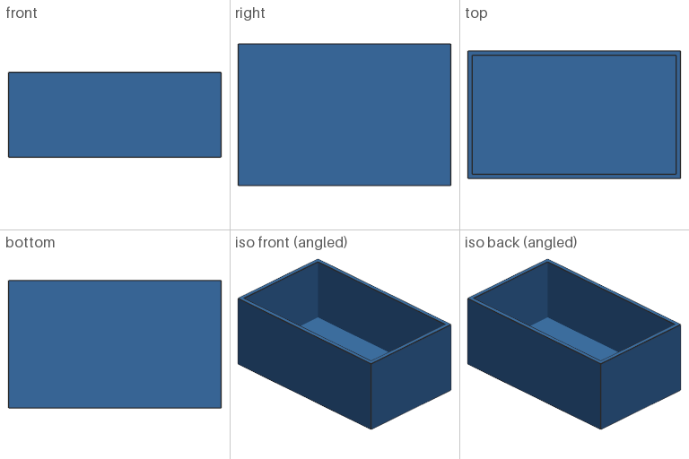
#61
I need a little open tray to keep SD cards in. It has to fit a 50 x 30 x 20mm spot on my shelf, thin walls are fine.
#62
A stepped shaft on one axis: 10mm diameter for the first 20mm, then 16mm diameter for 15mm, then 8mm diameter for the last 25mm.
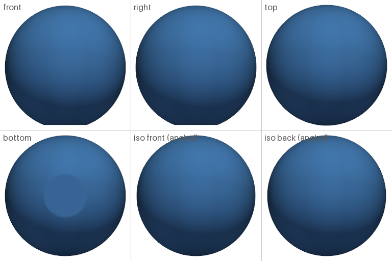
#63
An apple 50 mm wide with a short stem and one leaf.
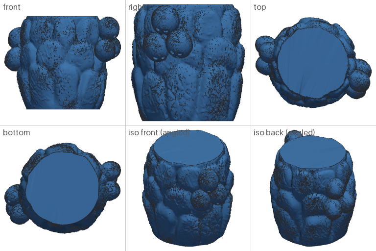
#64
A palm tree 90 mm tall: a slightly curved ringed trunk on a small round base, with long drooping fronds spreading from the top.
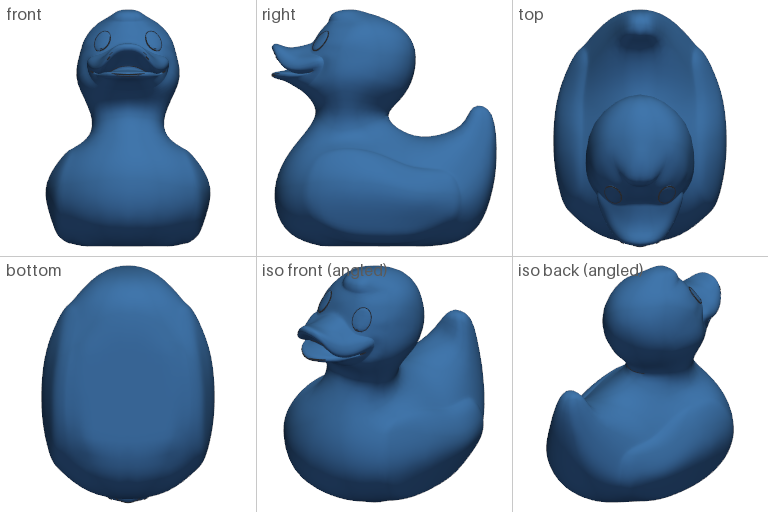
#65
A rubber duck, 45 mm tall, with a flat bottom so it stands.
#66
A wall hook: a 40mm x 60mm x 5mm back plate with two 4mm countersunk screw holes, and a curved hook arm that sticks out 35mm from the lower part of the plate and curves upward at the end.
#67
A round knob 30mm in diameter and 15mm tall, with a 6mm D-shaped shaft hole 10mm deep in the bottom; the flat of the D is 1mm in from the circle.
#68
A 25mm wide, 40mm tall, 3mm thick hanging plate with a keyhole cut through it: an 8mm diameter hole centred 12mm above the bottom edge, with a 4mm wide slot running 10mm straight up from the hole's centre.
#69
A cupcake 50 mm tall: a ridged paper cup, a swirl of frosting on top and a cherry at the peak.

#70
A cylindrical spacer with 12mm outer diameter, 6.5mm inner diameter, 15mm long.

#71
A hexagonal prism 30mm across the flats and 8mm tall.
#72
An owl figurine 50 mm tall: an egg-shaped body, a round face with two large eyes and a small beak, ear tufts, wings folded at the sides.
#73
A 25mm wide, 40mm tall, 3mm thick hanging plate with a keyhole cut through it: an 8mm diameter hole centred 12mm above the bottom edge, with a 4mm wide slot running 10mm straight up from the hole's centre.
#74
A walrus 55 mm tall, resting on its belly with its front flippers on the ground, a round head, whiskered snout and two long tusks pointing down.
#75
A cupcake 50 mm tall: a ridged paper cup, a swirl of frosting on top and a cherry at the peak.
#76
A standing llama 75 mm tall: four thin legs, a long upright neck, a small head with tall pointed ears and a fluffy body.
#77
A human hand, palm open with fingers spread, standing upright on its wrist, 90 mm tall.
#78
A stepped shaft on one axis: 10mm diameter for the first 20mm, then 16mm diameter for 15mm, then 8mm diameter for the last 25mm.
#79
A U-channel 100mm long, 30mm wide and 20mm tall, with 3mm thick walls and base, open at the top and both ends.
#80
A molar tooth 40 mm tall, standing on its two roots, with a wide crown and a bumpy top.
#81
Half an avocado 70 mm long, cut side up, lying flat, with the round pit sitting in the middle.
#82
A tool handle 25mm in diameter and 90mm long overall, with a fully rounded hemispherical back end and six 4mm diameter half-round flutes running along the straight part, evenly spaced around it.
#83
I need a little open tray to keep SD cards in. It has to fit a 50 x 30 x 20mm spot on my shelf, thin walls are fine.
#84
A thumbwheel 40mm in diameter and 10mm thick with 30 semicircular 2mm diameter notches evenly spaced around its rim and a hexagonal socket 5mm across the flats through the centre.
#85
An 80mm x 60mm x 5mm honeycomb panel: a grid of hexagonal through-holes 8mm across the flats with 2mm walls between them, leaving a solid border at least 3mm wide around the edge.
#86
A desk cable grommet: a 60mm diameter, 3mm thick round flange on top of a 50mm outer diameter, 20mm long tube with 2mm walls, open through the middle, with a 15mm wide slot cut through the flange and tube from one side to the centre so a cable can be slipped in.
#87
A round knob 30mm in diameter and 15mm tall, with a 6mm D-shaped shaft hole 10mm deep in the bottom; the flat of the D is 1mm in from the circle.
#88
Can you make me something to stand my AA batteries up in? 8 of them in two rows of four, holes 15mm wide and 20mm deep, in an 80 x 40 x 25 block.
#89
A frog sitting on its folded back legs, about 40 mm long, with big bulging eyes on top of its head.
#90
A thumbwheel 40mm in diameter and 10mm thick with 30 semicircular 2mm diameter notches evenly spaced around its rim and a hexagonal socket 5mm across the flats through the centre.
#91
An open-top rectangular tray 100mm x 60mm x 15mm with 2mm walls and a 2mm floor, with one 2mm divider wall splitting it into two equal compartments along its length.
#92
An owl figurine 50 mm tall: an egg-shaped body, a round face with two large eyes and a small beak, ear tufts, wings folded at the sides.
#93
A sitting cat about 50 mm tall, tail curled around its front paws, ears pointing up.
#94
Make me a ruler with my name engraved on it. The ruler is 150mm long, 25mm wide and 3mm thick, with the name ALEX engraved 0.5mm deep and a tick mark every 10mm along one long edge.
#95
Can you make me something to stand my AA batteries up in? 8 of them in two rows of four, holes 15mm wide and 20mm deep, in an 80 x 40 x 25 block.

#96
An open-top box 60mm x 40mm x 25mm with 2mm walls and floor, with a 3mm thick flange sticking out 5mm all around the outside of the top rim, flush with the top.
#97
A croissant 80 mm long, crescent-shaped, with rolled layers that swell in the middle and taper to the two curved ends.
#98
A pipe clamp ring: 10mm tall, 32mm inner diameter, 4mm wall, with a 2mm wide gap cut through one side of the ring.
#99
A phone stand: a 70mm wide, 80mm deep, 5mm thick base plate; a 5mm thick, 90mm long back support leaning back at 65 degrees from the base; and a 10mm tall lip along the front edge to stop the phone sliding.
#100
something to prop my 70mm wide phone up at an angle on my desk